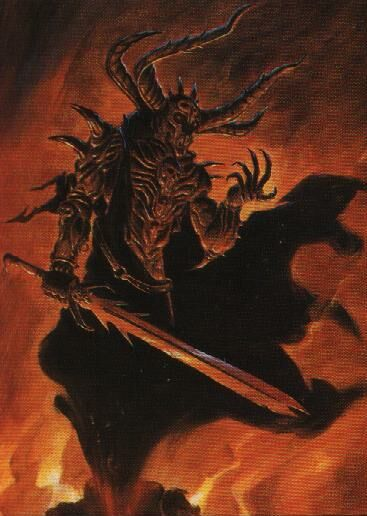
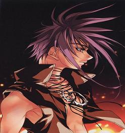

Forums galactiques > Assemblée Galactique : diplomatie officielle > Présentations
| Metro Respect diplomatique : 11  17/07 ETU 14:19 | Score : 7 Détails Cela faisait depuis quelques temps qu'une créature étrange rodait dans les couloirs de l'Assemblée Galactique. Une créature ne dépassant pas le mètre de hauteur, entièrement blanche, et rapellant parfois un insecte, une guêpe peut être. De longues antennes filiformes sortaient de sa carcasse compacte et massive. L'engin se déplaçait via des roues, et l'on ne cessait d'entendre ses murmures. Il ne cessait de regarder, d'analyser, et même d'importuner certains Commandants, ne serait ce par leur apparence des plus étonnante.
Puis, un jour, on le vit arriver ; alors, les Commandants y prétérent plus grande attention. On remarqua qu'il possédait des yeux, fins, avec une sorte de nez des plus long. Une bouche, qui correspondait à un commutateur vocal. Des espèces d'ailes, repliés contre son corps, et pour finir, trois roues lui permettaient de se mouver avec aisance et rapidité. Déboulant enfin dans la pièce destiné au présentation, qui n'était guère remplis en ces heures, il s'arrêta, pivota sur lui même, avant de lâcher un sifflement, et de parler à voix haute ... " Et bien, si c'est cela une Assemblée, j'ai du souci à me faire ... M'enfin, on m'a envoyé ici, autant que je me présente ... " Se plaçant au centre de l'Assemblée, il s'adressa aux autres Commandants, de sa voix naturelle, mais au accent de la robotique. " Bonjour à vous, ami Commandant. Je suis Métro, un androïde créé par Maestro, un illustre savant de ma Galaxie. Je suis d'ailleurs à son image, aussi intelligent, si ce n'est pas plus ... Bref, je tenais à vous présenter les salutations de la Confédération d'Oméga ; Confédération situé sur une des branches de cet Univers. Nous regroupons différents mondes dans notre Confédération, dans un but de paix et de prospérité. Nous préférerons toujours la parole à l'action, et nos ressources militaires sont assez malingre. Malgré tous, nous avons confiance en la valeur de nos diplomates, réputés dans notre monde, et dans notre foi dans les valeurs de l'Homme, et du respect de ces derniers ... " Pivotant encore sur lui même, on sentais qu'il cherchait quelque chose ... Quelques murmures permettaient de comprendre ce que le petit androide était en train de faire ... "Nan, cela je l'ai fait, cela également ... Bon, je crois avoir tout dit ! Ah, oui, autre chose ! Notre planète, Oméga, cherche des alliés, mais également des personnes soucieuses de la condition des humains, et du bien être de ces derniers ... En attendant, je vous souhaite une bonne fin de journée, et au plaisir de vous revoir, ami !" Le petit droide fit un rapide demi tour, avant de gagner la porte de sortie. Il heurta une personne rentrant au même moment, et faillit se renverser. Ronchonnant contre les humains, il regagna le vaisseau de Type Libellule qu'il avait laissé au main de son équipage, avant de regagner via Hyperespace sa place de conseiller sur sa planète d'origine ... | ||
| Rael' Esh Respect diplomatique : 4  18/07 ETU 20:47 | Score : 4 Détails Un personnage entra dans la Salle. Il portait une armure noir rougeoyante et une cape sombre. Son visage était caché derrière un masque de métal noir, représentant une face démoniaque. Un homme marchait à coté de lui. Même celui-ci, pourtant assez grand, paraissait petit par rapport au géant en armure. L'homme s'avanca et sortit un parchemin noir:
Salutations, origine! Je viens en paix...Non, c'est pas ca...Ah! Tremblez, misérables Mortels, car du haut de mes quatre planètes et mes vingt frégates, je vais tous vous écraser comme la vermine que vous...Non plus...hum...Ah, enfin Sa majesté, le Seigneur Noir Rael'Esh, Duc de la Tour Noir et autres distinctions inquiétantes. Le démon regarda l'homme qui s'écarta un peu. Puis Rael'Esh le saisit par le col, et, tirant l'Épée des Abimes Sombres et Éternellement Maudites, il le trancha en deux. Puis il regarda la salle avant de hausser les épaules, hésiter deux-trois fois à parler, puis il tourna le dos à l'Assemblée et sortit sans un mot. | ||
| Orélia Respect diplomatique : 186  18/07 ETU 20:50 | Score : 4 Détails
Eh! Salut tout le monde. Je m'appelle Orélia et je suis toute nouvelle dans la Galaxie. J'aime les couques et les banana split. La vie est belle ! Depuis que j'ai deux planètes, je suis en guerre contre les commandants les plus puissants de la Galaxie; comme par exemple, feu le bon Larry, ou Catherina la "sub-spatio télépathe", ou encore... King Size, la femme défunte de feu le bon Larry ! Mais oui. Laissez-moi vous présenter King Size la "morte-vivante". On s'y retrouverait mieux si les morts avaient l'amabilité d'arborer un blason, ou de tirer la langue, ou que sais-je... Elle était morte, mainant elle est vivante ! Hé! Hé! Naaan! Cé pa vré!!! Mais si, regarde : 18/07 ETU 08:58 Les champs de force dans le système étaient 4 pour l'attaquant au moment du tir. Vos pertes s'élèvent à : - 5 000 croiseurs lourds ioniques Nous avons pu localiser le croiseur qui a fait feu (système 1583, coordonnée 4). Il appartient au commandant king size. Dans mon natal, en plus; là où je suis plus capable d'aller sans me faire allumer par ces braves gens. La classe, non !?! ... pour une morte, je veux dire. Allez, salut ! Orélia | ||
| king size Respect diplomatique : 149  18/07 ETU 20:59 | Score : 2 Détails Un commandant arriva dans l'assemblée. Personne ne le connaissait encore mais il devait se présenter.
" Bonjour, je suis l'amiral Tchogocitch. J'ai pris la tête de la flotte et de l'armé quand ma reine est morte. Ma mère est bien sur King Underwood et non King Size comme beaucoup de gens le pense... " Il se tourna vers Orélia et lui dit: " Commandante je ne pense pas que les présentations des jeunes soit opportun pour poster vos malheurs... Malheureusement vos gestes ne vont pas avec vos paroles c'est pour cela que la prise de votre natal a été si facile. Mais ne vous inquietez pas j'en prendrais bien soin ma petite. Et si vous ne tentez rien pour le reprendre peut être que je vous le rendrais dans les prochains jours... Mais bon vous faite vous comme voulez... Sur ceux bonne soirée... Ps: Je peux vous trouver un hotel pour lôger..." | ||
| Orélia Respect diplomatique : 186 18/07 ETU 21:25 | Score : 1 Détails
C'est trop aimable, mon cher, mais je préfère lôôger à l'Ambassade. Quant à la facilité avec laquelle vous avez pris mon système, elle doit être due au fait que je suis mauvaise stratège ; et certainement pas au fait que vous possédez 2 053 777 014 unités militaires, tandis que je possède au total 142 CLA que je ne peux toujours pas utiliser mais que font mes chercheurs, ainsi que les pauvres CLI - fruits d'un malheureux investissement - que je venais de recevoir avant que vous ne les détruisiez. C'est évident ! Par ailleurs, il me semble que la Salle des Présentations est très adaptée à ma présentation, ainsi qu'à la vôtre. Bienvenue donc, cher Larry under King' son, et fasse le ciel que vous ayez hérité du facteur, plutôt que de ce bon vieux Larry. | ||
| king size Respect diplomatique : 149 18/07 ETU 21:33 | Score : 0 Détails En même temps je pense que vous avez assez de kamikaze pour attaquer un système donc vous avez échoué par manque de stratégie et non par manque d'argent...
Ne faite pas passé votre incompétence par votre pauvreté ma chere... Cela ne passera pas... | ||
| romi Respect diplomatique : 74  18/07 ETU 21:38 | Score : 0 Détails oooohhh ,si encore elle se battait au un contre un ...j'vous laisse deviner la suite ^^
==================== ..........Wen's Corp.......... ==================== | ||
| Orélia Respect diplomatique : 186 18/07 ETU 21:49 | Score : 3 Détails
Mon beau colonel, Quand on ne possède plus de planète dans un système - par exemple quand Larry, King Size, Galactor et Sollidor vous attaquent ensemble, alors que vous avez deux semaines de présence galactique -, quand on ne possède plus de planète, disais-je, les Kamikazes ne servent à rien. Hé oui ! En tant qu'Alliantiste, vous ne le saviez peut-être pas, encore que les Alliantistes soient les maîtres de l'information... Passons !, mais c'est comme ça. Alors, bien sûr, ce n'est pas tout à fait vrai. Certains commandants, comme Sollidor, sont capables de prendre les vingt planètes d'un système avec des Kamikazes, sans avoir jamais possédé de planète dans ce système... Nous l'appellerons : Sollidor le Conquéreur. Il est très fort. | ||
| Dark Vicking Respect diplomatique : 92  18/07 ETU 23:01 | Score : 1 Détails ** Début de Transmission **
Chère Orélia, tout le monde peut le faire suffi d'être Fédé... et de connaitre un peu le métier et le terrain Je viens de le faire encore tout a l'heure dans le natal d'un boulet qui ma mal noté a la Taverne Enfin quoi qu'il en soit vous verrez bien comment la Galaxie fonctionne, vous verrez on apprend vite en G0 | ||
| Erco Colson Respect diplomatique : 55  18/07 ETU 23:16 | Score : 1 Détails Sauf votre respect, c'est impossible, non. L'utilisation des Escadres Kamikazes requiert une tête de pont dans le système, prise de manière conventionnelle (CLAs, FPos...) ou transmise par un allié.
C'était justement là que résidait toute la valeur humouristique de la déclaration de Dame Orelia... Mes respects | ||
| Dark Vicking Respect diplomatique : 92 18/07 ETU 23:19 | Score : 0 Détails Oui
Chacun sa technique En parlant de se la faire passer par un allié: c'est pour cela que je disait qu'il fallait connaitre le terrain... Orélia MP | ||
| emerion Respect diplomatique : 11  19/07 ETU 04:18  | Score : 1 Détails Emerion se levas afin de prendre la parole suite a ces quelque debordement
-Commandantes et commandants je vous prirez de laisser cette salle aux presentation et non au reglements de comptes personel car je croit que c'est son but premiers Sur ce il quittas la salle car il n'avait lui meme plus rien a y faire | ||
| Anatole la Tafiole Respect diplomatique : 55 19/07 ETU 23:49 | Score : 22 Détails Un Type s'approcha du podium et manqua de tomber en montant la marche. Il tapota le micro et fit des bruits bizarres pour voir si il marchait correctement.
Il passa la main sur son front et pris une très très grande inspiration. Il leva des bras et dit d'un ton joyeux : Hahhaaa ! Salut Mes Amiiis !! Ben moi c'est Anatole ! Et vous !? ... AAAhh ! Je sais que vous m'adorez déjà !! Héhé ! Non !? Mais moi je VOUS adore quand même !! C'est le principal !! Haaahahaa ! Euh sinon, j'ai une blague à vous raconter ! C'est moi qui l'ai inventée ! Héhéééé ! Ben alors c'est euh... Quel est la différence entre Windows Origine et un Virus !? Haaaah ! Vous ne savez paaas ! Hein ! Si si ! vous ne le savez pas ! Eh ben c'est que Windows Origine il fonctionne, lui !! Ou c'est le contraire, 'sais plus... Héhéhé ! Mais avouez que c'est bien trouvé ! Hein !? Oui, je sais, je suis un très grand humoriste ! Hahaha ! Bon, je vous laisse les copains !! Je doit commander mon Yaourt sur OrigineWeb ! @+ les amis !! Anatole s'en alla, et s'étala vraiment par terre cette fois-ci. Hahahaa ! Z'inquiétez pas les amis, je l'ai fais exprès ! Héhé ! Il s'en alla pour de bon de l'assemblée, traînant le pas, tout content de sa prestation et de ses "nouveaux amis". | ||
| Christus Respect diplomatique : 4 20/07 ETU 22:03 | Score : 4 Détails Pendant une séance de l'assemblée, un bruit se fit ressentir. Puis, un jeune homme entrit dans la salle. Il se mit au centre de l'émicicle et dit:
Je suis Christus, Chef de la Planète Terrus et Grand COnseiller de la Coalition Conseil.Intergalactique. Puis il alla s'assoir à une place libre dans les gradins. | ||
| ange Respect diplomatique : 4  21/07 ETU 16:57 | Score : 4 Détails Semblant arrivé par le plus grand des hasards,
Débarquant dans ce monde sur le tard , Il était bouffée d'oxygène et rayon de soleil, Son âme ressourçait mille merveilles Être fait d'amour apportant sur terre le paradis, Tombé du ciel pour amener bonheur et magie, Les étoiles l'avait guidé jusqu'à l'instant présent , Quand derrière lui suivait la route du firmament . Méfiance passa dans les yeux des mortels, Qui ne pensèrent qu'a lui nouer ses ailes. Tombé sur terre en des temps déshumanisés , On le rejeta le traitant de malade illuminé . Que d'amour et de bonté il portait en lui , Il rêvait de faire de la terre un paradis. Machiavélique et calculateur on le croyait, Déçu par ce bas monde son âme fut blessé. Messager de l'au delà depuis toujours, Sa vocation était de répandre tout son amour , Blessé dans la passion meurtri dans son coeur, Ses forces s'en allèrent avec ses yeux en pleurs. Ne voulant pas être un second ange déchu, Les ailes paralysées mais sa bonté ayant le dessus, Son âme devenu torturé il préféra se retirer sur une île, Avec amertume il fit le dernier voyage pour la route de l'exil. | ||
| Boboul Respect diplomatique : 5 24/07 ETU 18:51 | Score : 5 Détails Haaaaaaaaaaaaaaaaaaaaaa!!!!!!!!!!!!!!! sproutch! paf! chtonk
-Aie! quelle chute, et zut où suis-je tombée là? -Vite mon Galatic Position Sat3! Et ben oui, après une cuite doublée d'une orgie, et, de s'être vautrée comme une merde on ne sait où, Boboul s'est paumée (la gourde direz-vous), le cycle temporel de sa galaxie natale l'a fait galaxir parmis vous, la conne ne le sait pas encore, soyez donc indulgent avec elle! -Bon d'après les éléments,il semblerait que je sois arrivée dans uen nouvelle galaxie pour moi! Chers femmes, hommes, choses, et autres, Bonjour, je suis ici par erreur je crois, mais je vous demande de bien vouloir m'accueillir les bras ouverts. Je me nomme Boboul, je suis issue de la galaxie Facette, très eloignée d'ici. Peut-être, quelques âmes charitables pourraient-elle me préciser qui gouverne chez vous, et me narrer un peu les actualités de votre monde. Merci | ||
| Chaytan Respect diplomatique : 13 25/07 ETU 17:38 | Score : 7 Détails Cela faisait des années que je rêvais de venir dans votre galaxie dont j'ai entendu le plus grand bien.
Mon nom est Chaytan .Enfin je réalise mon rêve .Aucune pollution ,rien que de la verdure ,c'est si beau. Mais il fait si froid ici ,le vent se lève , j'ai peur (petit clin d'oeil pour la déviante Alnia),je sent que quelque chose de terrible va arriver .Il pleut maintenant ,le ciel est noir. Mais qu'est ce qui se passe ,il faisait si beau il y a encore un instant. Les enfants remontes dans l'astronef on déménage ,on change de planète. | ||
| Georges Washington Respect diplomatique : 3 26/07 ETU 15:52 | Score : 3 Détails Bonjour à tous et à toutes. Je suis le président de ma planète U.S.A! Je viens d'êter élu par les citoyens de cette même planète. Je suis le premier président de cette planète car nous avons dû changer de planète par la faaute de ma famille. Ma famille est une famille de dingue tyrannique. Maintenant je suis devenu le plus grand fournisseur d'arme de la galaxie pour essayer de me faire des contacts pour retrouver ma famille que je pourchasserais jusqu'à la mort. Aujourd'hui au début de mon mandat je ne suis connu de personne car aucun commandant ne m'a demandé une arme hyper atomique. Je vais créer la plus grande marchandise d'arme au monde. Je ne suis pas encore le meilleur mais je le serais bientot.
Je demande une aide contre le commandant Albo car il m'attaque sans aucune raison. Il me faudrait un négociateur | ||
| Cassandra Respect diplomatique : 316  26/07 ETU 17:14 | Score : 1 Détails Je veux bien jouer le role de médiateur, mais si vous le voulez bien parlons-en par mp ;-).
Bonne et longue vie à tous nos nouveaux promus! | ||
| Leni Bard Respect diplomatique : 6 30/07 ETU 18:46 | Score : 6 Détails Le jour de ma naissance...je suis né.
Je me souviens . Il y avait un long tunnel, au bout scintillait une faible lumière blanche. J'avançais centimètre par centimètre, si bien qu'il fallut plusieurs heures pour qu'enfin je m'en sorte. Je serais bien resté un peu plus longtemps dans ma bulle. Il y faisait bon, j'était à l'aise, mais bon, l'avenir le tendait les bras, je devais sortir et devenir un vrai homme. Ce jour là, j'aurais mieux fait de rester coucher... A peine eut-je sorti la tête et les épaule de la grotte douce et humide, qu'un géant tout blanc m'agrippa par le cou et me tira de tout ses force. Une fois entièrement dehors, ce cinglé me retourna comme une crêpe et me décolla une longue série de grosse baffe dans le dos. Cet homme ne devait pas être très content de me voir... Ensuite, on me plaça dans les bras d'une grosse dame braillarde qui était plus rouge que la plus mur tomate et qui, dirait-on, venait de piquer une tête dans une piscine de sueur tellement elle était humide et empestait. Je compris longuement après qu'elle était ma mère... On ne naît qu'une seule fois...encore heureux! ----------------------- Un homme avance dans les couloir de l'assemblée galactique. Vêtu d'un marcel qui devait autrefois être blanc et d'un pantalon de toile noire, il progresse en direction de la salle des présentations. Il arrive devant la porte, repousse de sa main sale une longue dread tomber sur son visage souriant, et lève les yeux en direction d'un écriteau sur lequel est gravé en lettre d'or les règle à respecter dans l'hémicycle. Son visage devint maussade à la vue de l'article 3 stipulent que fumer n'était pas autorisé une fois passé cette porte. Penaud, il retira lentement le pétard de sa bouche, le jeta dans la poubelle approprié et entra dans la grande salle. Les siège étaient presque tous inoccupés, seule restait les dormeurs , les auteurs des habituels racontars sur les nouveaux quelques autres...après tout, la qualité était plus importante que la quantité. Il gravit rapidement les marche menant à la scène, s'approche du micro et commença son discours. - Bien le bonjour à tous, je me nomme Leni Bard. A l'étonnement de tous, ce sont les seuls mots que le nouveau commandant prononça avant de descendre de l'estrade et d'aller prendre une place du premier rang. Comme il l'avait penser un peu plus tôt, ce n'est pas la quantité qui compte, c'est la qualité... |
Forums galactiques > Assemblée Galactique : diplomatie officielle > Présentations